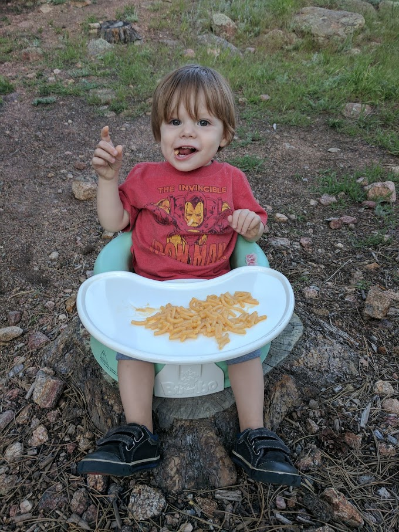
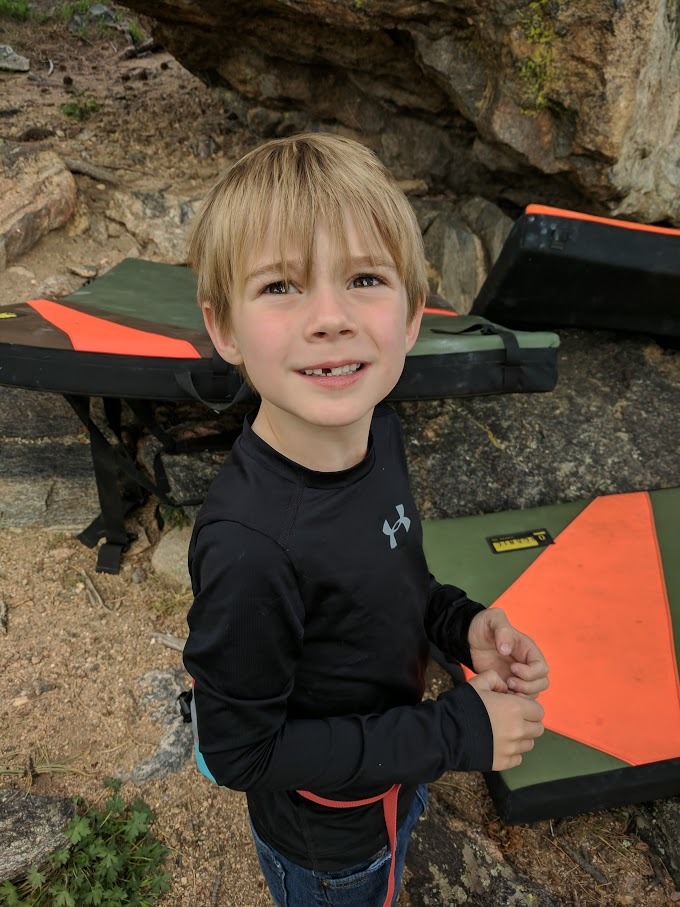

Rocky Mountain National Park Trip, 2017
On June 3rd, 2017 Winston, Arlo, Sydney, and Brian Breaker loaded up and headed out to Rocky Mountian National Park. Some of the locations in the following pictures can be seen in the map below.
Day 1
We loaded up our little camper and drove… for a long time.
At home.
Day 2
We finished the drive to RMNP and set up camp for the week. We were at the Moraine Park Campground and may have had the best view that could be gotten there.
I-70 Rest Area.
Our camp site.

Just in time for dinner.
Day 3
We hung around the campground, tried to recover from the drive, and then took a short hike up to Nymph Lake. Arlo loved it… got to play in the snow.
On the shore of Nymph Lake
On a boulder above Nymph Lake
Day 4
We spent some more time around the campground and hiked the Fern Lake Trail to The Pool.
On the trail near The Pool
The Pool
Day 5
We spent some more time around the campground and hit up the Veritas boulder. Arlo killed it.
Veritas Boulder
Day 6
We drove to the top of the Trail Ridge Road, came back down to Estes Park and had some lunch, and hit up a random roadside boulder we found.
At the top of Trail Ridge Road

Throwin for it. Get em.




Random roadside boulder
Happy meals for the boys and back to the camp site
Day 7 and 8
We drove… home.
Day 9
It’s good to be back home and…
Winston loves black beans.